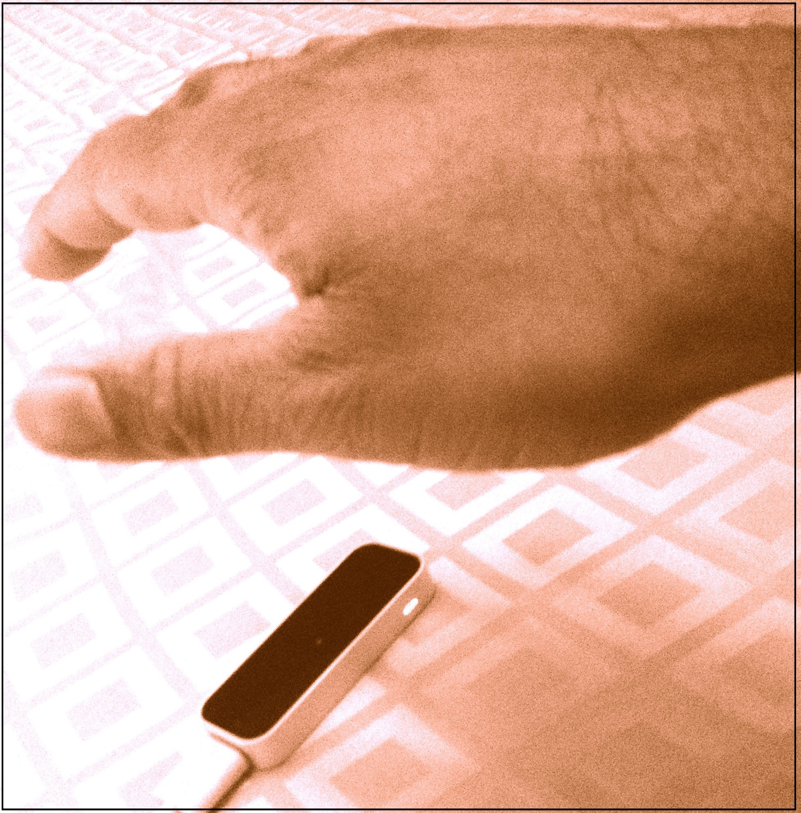
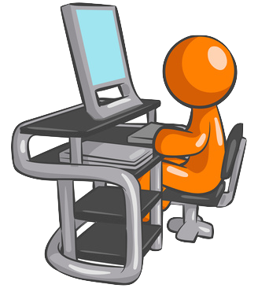
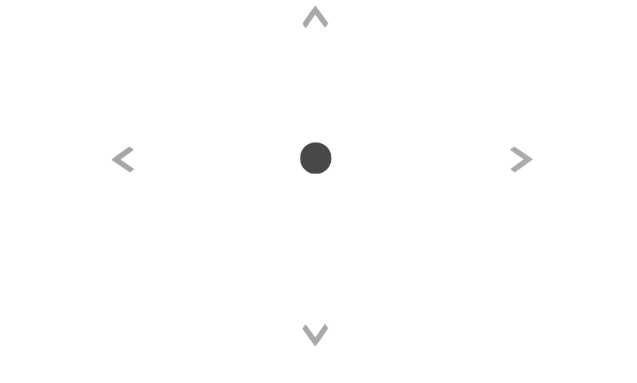
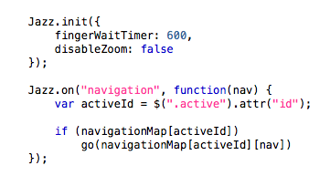
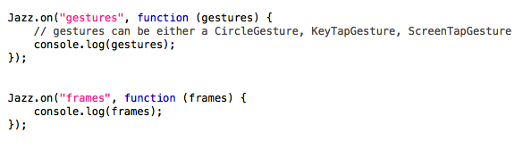
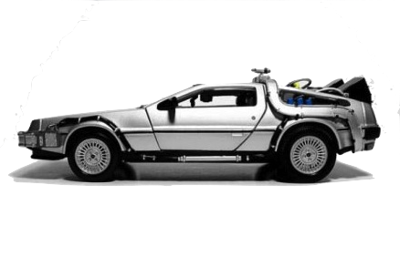

Hands in the air

The basics
Place your elbow on your desk and raise your hand flat over the Leap motion controller for the "Neutral" position.
A neutral position with Jazz hands is the position where no navigation event is triggered.
Jazz hands is right hand biased. As a result, you will find your hand is in "neutral" when it hovers slightly above the controller to the right.
Future versions will be less prejudiced.

The 4 basic Jazz gestures
The 4 basic Jazz gestures are up/down on the y-axis. Left/right follow the x-axis.
A timer will begin once you place your hand in a position.
Once the timer completes, the application will be informed of your intended gesture.
Timers can be cancelled by moving your hand.

Zooming Jazz gestures
There are 2 zooming Jazz positions are zoom in and zoom out, along the z-axis.
It's easiest to begin with your hand in neutral before attempting a zooming gesture.
"Zoom in" gesture is a hand position that is closer to the screen.
"Zoom out" gesture is a hand position that is away from the screen.
Auto-repeating gestures
By keeping your hand in a Jazz position, the timer will reset and repeat.
As an example, in this getting started guide you can pan left quickly by keeping your hand in the "Left" Jazz position.
All 6 Jazz gestures will be auto-repeated if you keep your hand in the required position.
Hands in the code

Jazz hands on Github
Jazz hands is under active development. It currently is a Alpha version, so be sure to check for frequent updates.
The API will remain the same, so subsequent versions should not affect your implementations of Jazz hands.

Quick start implementation
The simplest implementation just requires an init() and Jazz.on("navigation") binding.
Jazz.init()
Jazz.on('navigation', function(n) {
console.log(n);
});
All event bindings
// n = left, right, up, down, zoomIn, zoomOut
Jazz.on("navigation", function(n) { console.log(n); });
// f = 1,2,3,4
Jazz.on("fingers", function (f) { console.log(f); });
// g = CircleGesture, KeyTapGesture, ScreenTapGesture
Jazz.on("gestures", function (g) { console.log(g); });
// f = raw "frame" events from leap.js framework
Jazz.on("frames", function (f) { console.log(f); });
Further configuration
fillStyle - Color of the navigation circle
fingerWaitTimer - Milliseconds event timer
fingersHoverText - Text to display on fingers held
disableZoom - Default is false
enableHelperArrows - Default is true
Jazz.init({
fillStyle: "black",
fingersHoverText: ["One finger", "Two fingers!?"],
fingerWaitTimer: 600,
});
Design intentions
Simplified UI
Jazz hands has a singular focus of simplicity.
Capturing single hand positions, and representing them as intended gestures.
As a result, Jazz hands is great for simple single handed web apps.
It is not intended for real-time direct manipulation of an environment.

Simplified API
Along with a simple UI, the intent was the have a very simple API.
The Jazz.on("navigation") event is the primary means of understanding what a user intends.

Access to under the hood
Having said that, Jazz hands does provide simplified access to the native to the leapjs gestures.
The same is true for access to the raw frame event data.

Library dependencies


What's next?

Bug fixes - known issues
Jazz hands is still currently in Alpha until the kinks get worked out. Here are some examples:
- Circle tracking hand movement can occasionally jump.
- Rendering of the hands canvas is not very considerate of browser sizes.
- Jazz hands is only currently supported on Google Chrome and Safari. Broader testing will allow broader browser support.
Potential new features
- Disable/Enable timer
- Free-hand mode rendering all fingers on canvas
- UI feedback on captured gestures (Circle, Tap, etc)
- Introduce simplified gestures like grab, push and pull
- Create impressjs application specifically for presentations
Further Inspiration
- Evaluate PaperJS and ThreeJS demos
- Re-watch Minority report and NUI TED talks
- Read various proposals on NUI gesture
- Buy and play Leap Motion games
Feedback and testing
If you have a Leap motion controller and have been using Jazz hands, I'd like to know what you think.
Feel free to email me at
troygdaniel@gmail.com.
Constructive critisim is always prefered. It's easier to build on ;)